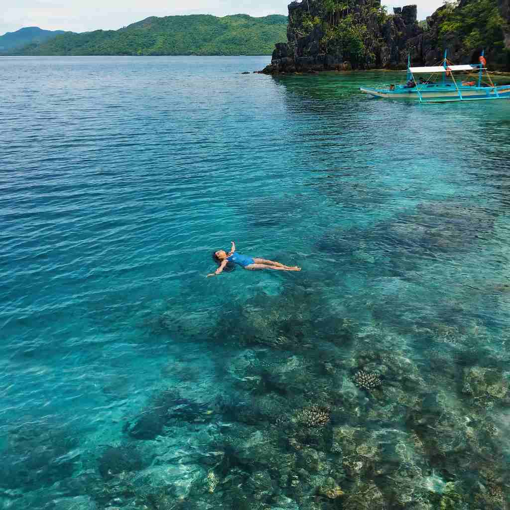

Start with the detail that catches most first-timers out: Coron Town is not on Coron Island. The town sits on Busuanga Island, the large island with the airport, while Coron Island, home of Kayangan Lake and Twin Lagoon, is a 20 to 30 minute boat ride away and has no overnight stays. Every hotel in the area is on Busuanga, either in town or along the coast, or on one of the small private islands nearby.
That leaves a simple choice. Stay in Coron Town and you walk to the tour boats, restaurants and the Mount Tapyas viewpoint. Stay outside town, on the Busuanga coast or a resort island, and you swap that convenience for quiet water, sea views and sunsets from your room.
This guide covers each area, what rooms cost in 2026, where to start looking and how to split a short stay. Prices often double between the June to November low season and the December to May high season, so check current rates when you book.

Town or Out of Town? The Quick Answer
Stay in town if…
- It is your first visit and you want to walk everywhere
- You plan two or three days of island hopping
- You want the widest range of prices, from dorms up
Stay outside town if…
- You want quiet nights, a pool and sea views
- You are diving, celebrating or on a honeymoon
- You are happy for your resort to arrange the boats
Coron Town Proper: The Easy First-Timer Base
Coron Town spreads along Calle Real, the main road that runs parallel to the bay, across the Poblacion barangays. Most hotels, guesthouses, restaurants and tour offices are within walking distance of the municipal pier, where island-hopping boats leave in the morning. The central plaza, Lualhati Park and the public market are usually 5 to 15 minutes away on foot.
Mount Tapyas rises above town, with a large cross at the top and more than 700 steps to reach it. The climb is best timed for the sunset view over Coron Bay. What town lacks is a proper swimming beach, and the main road gets noisy with tricycles and vans in the morning.
Room prices in Coron Town, 2026
- Dorm beds: about ₱600 to ₱1,200
- Private fan rooms: ₱1,000 to ₱1,800
- Aircon rooms: ₱1,800 to ₱4,000
- Boutique hotels: ₱4,000 to ₱8,000
- Two Seasons Coron Bayside HotelOn the waterfront along the National Road in Barangay Tagumpay. Close to town but quieter than Calle Real, and a good fit for families.
- The Funny Lion CoronA mid-range boutique hotel in town with a rooftop bar, handy as a base for tours.
- Corto del Mar HotelA short drive from Mount Tapyas, with an outdoor pool, a restaurant and 24-hour reception.
- Charms Hotel, Blue Waters Inn and Zuri ResortLong-running mid-range options near the town plaza.
- Hiraya Homestay, Sea Horse Guest House and Jim's Castle InnBudget picks in the Poblacion, 5 to 15 minutes on foot from the central plaza.
Town is also the cheapest way to see the big sights, since the standard Coron island hopping tours all start from the pier a few minutes away.
The Busuanga Coast: Quiet Water and Sunset Views
Outside town, the road follows the shore of Busuanga, and the coast is much less built up. Resorts here tend to have their own piers, small beaches better for kayaking and paddle boarding than swimming, and open views across the water at sunset. Some run beach clubs on nearby islands that guests can boat to for the day.
Depending on where you stay, town is 15 to 40 minutes away by van or tricycle. Most resorts have restaurants, so you rarely need to go back for dinner. Expect fewer budget choices and more pools.
- Busuanga Bay LodgeA waterfront boutique lodge with 18 sea-view rooms, a private pier, an infinity pool and a beach club on a nearby island.
- Bacau Bay Resort CoronA four-star beachfront resort north of town, good for families who want resort facilities without the cost of a private island.
- OcamOcam Azur InnA mid-range inn with villa-style rooms and an outdoor pool looking over the bay.
- El Rio y Mar ResortA beachfront resort on a quieter stretch of coast, suited to longer stays.
Private Island Resorts: A Night or Two of Escape
Several small islands around Busuanga have been turned into resorts. You sleep, eat and swim on the island, and boats take you out to the Coron Island sites from the resort's own jetty. They are the quietest and most expensive way to stay, and you work around the resort's schedule for meals and transfers, so arrange the trip from Busuanga Airport before you land.
- Two Seasons Coron Island Resort & SpaA private island resort with its own beach and overwater features. Boats to Kayangan Lake and Twin Lagoon leave from the resort.
- Sangat Island Dive ResortA beachfront dive resort with its own dive centre, close to the Japanese shipwrecks.
- Club Paradise PalawanAn island resort off the north of Busuanga, with a private beach, spa, beachfront dining and some of the area's best dive sites nearby.
If wreck diving is the reason for your trip, our guide to Coron wreck diving and Kayangan Lake explains the costs and fees before you choose a dive resort.
Near the Market and National Road: For Early Flights
The reclaimed area along the National Road, near the public market and terminal, has newer hotels with parking and easy access to the road to Busuanga Airport, which is 30 to 45 minutes away. Marina del Sol Resort & Yacht Club, with its marina and pier, is a good choice for anyone arriving by private boat. Stay here for an early flight or if you have a car, and accept a short tricycle ride to Calle Real.
Getting Around and What It Costs
Things to Know Before You Book
Four small details that make choosing a base easier.
Ask about pier pickups
Tours leave the town pier around 8 or 9 in the morning. Town hotels can usually call a tricycle, but coast and island resorts may charge for the transfer, so ask first.
Check generator hours
Power in town is now steady, but coast and island resorts run generators and some schedule their water. Ask about the hours if it matters to you.
Bring water shoes
Kayangan Lake and Twin Lagoon involve a short climb and a swim. A dry bag and reef-safe sunscreen are worth packing too.
Stay in the Poblacion
On a tight budget, base yourself in town. The Poblacion has the most guesthouses and the shortest walks to tour offices.
How to Split Your Nights
- 3 nightsTown, then quiet
Two nights in Coron Town for two island tours and the Mount Tapyas sunset, then one night on the coast or a resort island.
- 4–5 nightsAdd a resort stay
Three nights in town and two at Sangat, Two Seasons Coron Island or Busuanga Bay Lodge. You get the convenience and the resort without moving too often.
- On a budgetTown the whole way
Stay in the Poblacion for the whole trip and spend the savings on an extra tour.
No hotel in Coron Town comes with a swimming beach, and that is fine. The right base is the one that balances how much you want to walk with how much quiet water you want outside your door at night.
Photo credit: Elaine Bernadine Castro on Pexels.


Comments
No comments yet. Been here recently? Share a tip or ask a question.
Leave a Reply